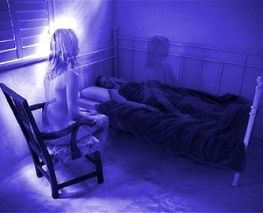

A pesar de no tratarse de sueños lúcidos propiamente dichos, es posible que tarde o temprano experimentes un falso despertar o una OBE (Out of Body Experience) también conocida como experiencia extracorporal.

Falso despertar
OBE
El falso despertar es una situación muy curiosa que se experimenta con relativa frecuencia. Consiste en creer que nos hemos despertado pero en en realidad seguimos soñando. Continuamos en el mundo de los sueños sólo que visualizamos la habitación a veces con una claridad a veces
La OBE o experiencia extracorporal es un estado mental en el que nuestra conciencia se sitúa en el exterior de nuestro cuerpo físico. Es decir, vemos nuestro cuerpo durmiendo en la cama mientras deambulamos por la habitación o en experiencias traumáticas se ha descrito como víctimas de accidentes de tráfico observaban el impacto desde el exterior del coche que conducían, o que presenciaban su operación quirúrgica en tercera persona.
Este estado mental a veces se denomina viaje astral, cuando toma connotaciones religiosas o esotéricas, y para algunos es la prueba de que alma y cuerpo son dos entidades separadas que se disocian justo antes de la muerte.
Este estado mental está estrechamente relacionado con el del sueño lúcido pues en ciertos momentos se puede pasar de un sueño lúcido a un OBE y viceversa.
extraordinaria. Además los falsos despertares se pueden encadenar, yo he llegado a tener 5 falsos despertares encadenados.
El falso despertar es una situación que hay que aprovechar para tener un sueño lúcido. Cuando dudemos de si nos hemos despertado en el mundo físico o en el de los sueños debemos hacer un test de realidad para salir de dudas.
